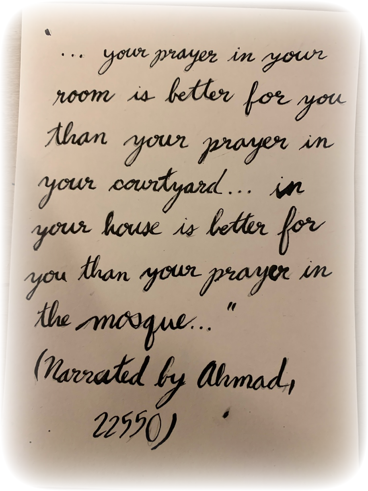
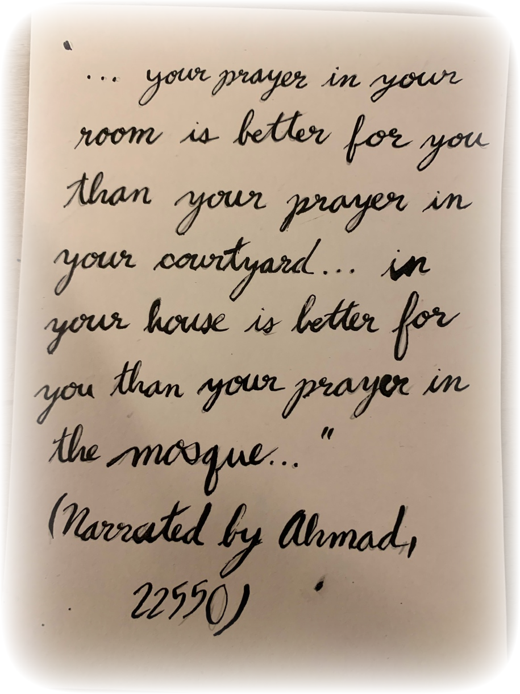

The architecture of a mosque can vary greatly depending on the era and the location in which it was built, but there are a few features that many have in common. Of these, the most essential is a large open space for congregational prayer, and the mihrab, a niche indicating the direction of Mecca. Here are explanations of the purposes of many of the elements of a mosque.
With the main goal of a mosque being to hold the male population of a city or a town, a mosque must have a very large space inside for Friday afternoon prayers, which all men are required to attend. The floor of a mosque is often carpeted, so everyone takes off their shoes. The carpet has a pattern of lines on it in order to indicate where to stand, allowing for straight lines of Muslims standing shoulder to shoulder. Women who attend pray separately from the men, not necessarily in another room, but with a divider between them. There's a lot of confusion around whether women are forbidden, invited, or required to attend Jummah, the Friday afternoon congregational prayer, as well as about whether they should go to mosque at all. From the information I found, women are allowed to go to mosque as long as they have the permission of their husband, who has no right not to let them unless the woman is breaking another rule in doing so. For example, if a woman intends to catch a ride with another man, it is the husband's duty to stop her. While they may go if they wish, the Qu'ran discourages them from doing so, saying that it is better for them to pray by themselves.
The mihrab is a niche or indentation in one wall of the mosque that indicates the direction of Mecca, the origin of the Islamic Faith. The direction of Mecca is called Qibla, so the wall upon which the Mihrab is indented is called the Qibla Wall. Everyone faces the Qibla wall when praying.

Many Mosques have domes built into the ceiling. Called Qubba in Arabic, they are often placed above the main hall as a symbol of heaven. Earlier mosques were built with just a small dome above the Mihrab, but today they are often built to be above the entire prayer hall.
In areas with mainly muslim populations, the minaret is used to call muslims to prayer. It is a very tall tower. A cryer, or muezzin, stands at the top and calls everyone to prayer five times a day. The minaret, visible from afar, serves also as a constant reminder of the presence of Islam. The word minaret comes from the word “manarah” , the Arabic word for lighthouse.
Before prayer, muslims perform a ritual washing in the ablutions area. Many larger mosques have fountains for ablution, but restrooms can be used to cleanse oneself in smaller mosques. The fountain is often found in a courtyard adjacent to the prayer hall. The courtyard is also useful for activities that are less related to religion, as I'll go into in another section.

The minbar is a raised platform from which the imam gives sermons, mostly used during congregational prayers on Friday and during holy times of the year, such as during Ramadan and the Feast of the Sacrifice. The Kursi, or the chair, is used by religious scholars to give lectures on Islamic scripture and interpretations of the Quran. The minbar and kursi are both found on the Qibla wall.
Although the inner decor varies as much as the mosque structure itself due to the eras and locations of different mosques, there are a few very common elements. Many mosques have carpet, which is why muslims take off their shoes as they enter. The carpet has a pattern of lines on it indicating where to kneel so that everyone is in neat lines, shoulder to shoulder. The pattern on the carpet can vary in the intricate patterns, some having simple lines going in one direction, while others with arch-like designs, showing not only the distance between rows but the spacing on each row. Because the first and last prayers are before dawn and after sunset, mosques require interior lighting, which is often done with hanging lamps. Before electricity, mosques were illuminated by hundreds of oil lamps, greatly adding to the ambiance of the mosque. Finally, the mosque is decorated with calligraphic verses from the Quran and Hadiths. The dome and the Qibla wall are particularly ornate in this department.